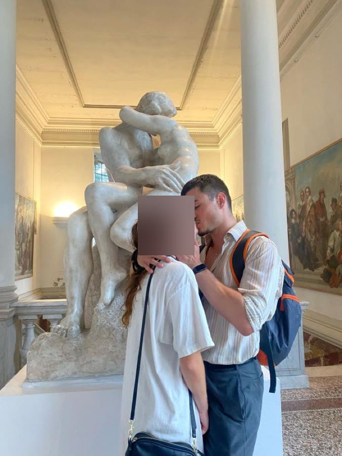
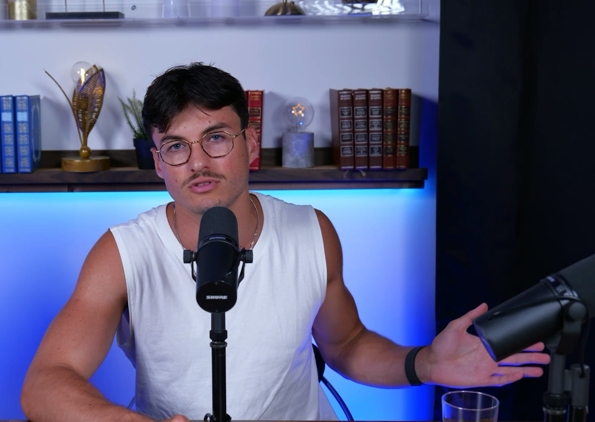

Tu veux une copine, des résultats avec les femmes. Sauf que plus t'en as besoin, plus ça te fuit — et elles le sentent. 6 mois en 1-à-1 pour régler le vrai problème : le besoin de validation. La rencontre, c'est le bonus.
Pas encore prêt ? Fais le test — 2 min →Une copine, des dates, des résultats. OK. Mais regarde ce qui se passe vraiment quand t'es dans la course :
Le problème, c'est pas ton « game ». C'est que ta confiance est stockée chez les autres — surtout chez elles. Et ce qui est chez les autres, tu le contrôles pas.
Et le pire scénario, c'est même pas de rester seul. C'est de l'avoir, ta copine, sans avoir réglé ça : elle sent le besoin, elle part, et tu tombes de plus haut. Régler le fond d'abord, c'est comme ça que tu la trouves — et que tu la gardes.
Je vais être full transparent avec toi, parce que c'est comme ça que je fonctionne. Voilà le chemin, sans filtre.
Au début j'étais le mec seul, sans meuf, incapable d'aller parler à une fille. Zéro confiance. Et j'ai décidé de « régler le problème » comme on m'avait appris : en performant.
J'ai tellement bossé le truc que j'en ai fait mon métier : coach en séduction. 167 approches en 6 semaines, à une époque. Ouais, je comptais, j'avais un tableur. Des centaines de rencontres. Vu de dehors : le mec confiant. En vrai, chaque validation me faisait exister… deux heures.

Toulouse, un soir d'octobre. Un date sympa, rien de dramatique. Je la quitte, je marche, et là ça me tombe dessus : VIDE. Vide et seul. Et tu sais c'était quoi mon réflexe ? Aller dans un bar parler à des inconnus. Chercher ma dose. Je me suis arrêté net dans la rue : « Mais est-ce que c'est sain, ça ? » Ma confiance, c'était pas de la confiance. C'était une addiction.
23h, je raccompagne une fille chez sa pote. J'avais même pas vraiment envie d'être là, je jouais mon rôle, encore. Deux mecs entrent dans le bâtiment en même temps qu'elle. Je poireaute dehors, sous le lampadaire. Ils ressortent. Ils marchent droit sur moi.
J'ai couru comme jamais de ma vie. Mon cœur a battu la chamade pendant trois heures. Et le pire, c'est ce que j'ai compris après : je m'étais mis en danger pour une fille qui me plaisait même pas. Le système m'avait envoyé au casse-pipe pour RIEN. La semaine d'après, je suis quand même sorti de chez moi, mais dedans, tout s'écroulait. Je suis descendu bas. Dépression.
Fin août, j'ai poussé la porte d'un psy. J'ai mis toute ma vie à le prendre, ce rendez-vous. 60 balles la séance pour apprendre à mettre mon ego de côté et prendre des claques. J'y suis encore.
Et puis les trucs durs, les vrais. Je me suis ouvert à mon frère, je lui ai même demandé, littéralement, ce qu'il appréciait chez moi. Sa réponse m'a fait pleurer devant mes colocs. Première fois de ma vie que je pleurais devant eux. Il m'avait écrit : « Bordel, t'en as mis du temps à te réveiller. » J'ai dit « je t'aime » à ma mère. Puis à mon père. Ça a l'air de rien, dit comme ça. C'est le truc le plus dur que j'aie fait.
Aujourd'hui j'ai passé un cap : j'ai presque plus besoin de validation. Je dis « presque » parce que je te mentirai jamais : la confiance, c'est pas de ne plus jamais tomber. C'est le droit de t'écrouler, et la certitude de te relever. Entre-temps, accompagner des mecs est devenu mon métier : j'en coache des dizaines chaque semaine, en atelier et en 1-à-1. Et j'en parle à visage découvert.

Ce chemin, je l'ai payé plein tarif : des années à chercher au mauvais endroit, une agression et une dépression pour ouvrir les yeux. Toi, tu peux prendre le raccourci, avec quelqu'un qui a la carte.
Même taf, mêmes potes, même ville. Ce qui change tout, c'est d'où vient ta confiance.
La confiance, ça se « pense » pas. Ça se construit avec des preuves. Et c'est dans le lien qu'elle se perd, donc c'est dans le lien qu'on la regagne.
Mieux te comprendre, pour mieux relationner. On trie ce qui te vide, on nourrit ce qui te remplit, et surtout : tu apprends à dire ce que tu ressens : à tes potes, ta famille, aux femmes. Les conversations que tu repousses depuis des années, on les prépare ensemble et tu les as pour de vrai. C'est là que la confiance revient : pas dans ta tête, dans tes liens.
Des défis calibrés sur TA vie, en surcharge progressive : on passe de 50 à 50,5 kilos, pas de 50 à 100. Chaque défi réussi est une preuve que ton cerveau peut plus nier. Un stock de preuves internes que personne peut te retirer.
Pas pour la vitrine. Pour la parole tenue. Chaque séance honorée, c'est toi qui te prouves que tu peux compter sur toi. La validation la plus pure : elle ne dépend de personne.
Tout ce que je gardais pour moi, ça ressortait ailleurs : anxiété, besoin de validation. Journal d'humeur, debriefs, mots posés sur ce qui se passe dedans. C'est le travail le plus dur, et celui qui change tout.
C'est pas une formation vidéo que tu vas regarder à moitié. C'est un accompagnement 1-à-1 où t'as accès à moi, et où je m'implique sur ton cas précis. Je prends 5 personnes, pas une de plus : l'accès direct, ça se partage pas en 50.
En visio, rien que nous deux : un appel par semaine le premier mois, puis toutes les deux semaines. On débriefe tes défis, on ajuste le plan, on va chercher ce qui bloque vraiment. Pas de script : chaque appel part de TA semaine.
Un doute avant une conversation difficile ? Un défi qui te fait flipper ? Tu m'écris, je te réponds. T'es pas seul entre deux rendez-vous, et c'est exactement ça qui fait la différence.
Tes défis de sortie de zone de confort sont construits pour ta vie à toi, pas copiés d'un PDF. Recalibrés à chaque appel selon tes preuves accumulées.
L'outil qui a tout changé pour moi. Tu apprends à capter tes émotions en temps réel, à les écrire, à les décoder. Au bout de quelques semaines, tu te connais mieux qu'en 10 ans.
Je suis prêt à porter le risque à ta place, à une seule condition : que tu joues le jeu.
Si tu fais le travail (pas parfaitement, mais vraiment : les défis, les appels, le journal) et qu'au bout des 6 mois TOI tu estimes que rien n'a bougé, je te rembourse intégralement.
Un accompagnement 1-à-1, ça veut dire mon temps et mon énergie sur ton cas. Donc je choisis. Franchement, ça vaut mieux pour nous deux.
Précision : ça, c'est pour l'accompagnement, lui, je le réserve. L'appel, il est ouvert. Si tu t'es reconnu plus haut, prends-le.
Pas un « appel découverte » où on te récite un pitch. Un vrai point sur toi, où tu repars avec des trucs concrets à appliquer, même si on bosse jamais ensemble.
Tu me racontes où t'en es. Moi, je creuse, pour trouver d'où vient VRAIMENT ta perte de confiance.
Pendant l'appel, je te donne mes premières pistes concrètes pour ta situation. Tu repars avec un plan de départ, quoi qu'il arrive.
Si je pense pouvoir t'emmener loin, je te propose l'accompagnement et je t'explique tout. Si c'est pas pertinent pour toi, je te le dis cash. Pas de forcing, jamais.
Je sais. C'est exactement ce que je voulais aussi, et j'ai passé des années à optimiser le « comment » : les approches, les techniques, le personnage. 167 approches en 6 semaines. Résultat : des rencontres, oui. Une vie meilleure, non. Parce que le besoin, lui, était toujours là — et un besoin, ça se sent.
Le paradoxe, il est là : les résultats que tu veux sont un sous-produit. Le mec qui n'a plus besoin de plaire devient celui qui plaît. Et surtout, quand ça marche, ça tient — parce que t'as pas besoin d'elle pour exister. C'est pas de la philosophie, c'est le raccourci le plus direct que je connaisse. J'ai testé l'autre chemin pour toi.
Parce qu'un changement d'identité, ça prend du temps. T'as passé 20 ou 30 ans à construire le réflexe de chercher la validation dehors. C'est pas en 3 semaines que ton cerveau désapprend ça.
6 mois, c'est le temps qu'il faut pour accumuler assez de preuves internes pour que la nouvelle version de toi devienne la version par défaut. Plus court, c'est du vernis. Et le vernis, ça saute au premier choc.
Comprendre, tu sais déjà faire. C'est même peut-être ton piège : intellectualiser permet de ne pas agir. Je le sais, c'était le mien.
La différence ici, c'est l'action calibrée + quelqu'un qui te connaît, qui te suit, et qui ne te laisse pas te raconter d'histoires. Un livre ne te rappelle pas que t'avais dit que tu le ferais.
Peut-être. Et si c'est le cas, je te le dis dès l'appel. Je serai le premier, parce que moi-même j'en vois un, et je l'assume.
En vrai, les deux se complètent : le psy m'a aidé à comprendre d'où ça venait. Le taf concret (les défis, les conversations, le journal), c'est ce qui m'a reconstruit. Le psy travaille sur le passé. Moi je t'aide à construire des preuves au présent.
Le prix, je te le donne pendant l'appel, une fois qu'on sait tous les deux si je peux t'aider, et avant que tu décides quoi que ce soit.
Ce que je peux te dire : c'est un investissement sérieux, cohérent avec 6 mois de mon implication sur 5 personnes max. Si tu cherches le moins cher, c'est pas ici.
Tu peux. Moi je l'ai fait « seul »… en 6 ans. GG à moi. Des détours qui m'ont coûté cher, une thérapie, et beaucoup de soirées à me sentir vide sans comprendre pourquoi.
La vraie question c'est pas « est-ce que je peux », c'est « combien de temps je suis encore prêt à perdre ». Si ta réponse est « plus un seul jour », réserve l'appel.
Oui. La dépendance à la validation, c'est le même mécanisme partout : au taf, en couple, avec les potes, dans la famille. La séduction c'est juste le terrain où moi je l'ai vécu à l'extrême.
Ce qu'on construit ensemble, c'est une confiance qui tient dans TOUS les domaines, parce qu'elle vient de toi.
Les 6 mois vont passer de toute façon. Tu peux les passer à courir après, ou à devenir le mec qui n'a plus besoin de courir.